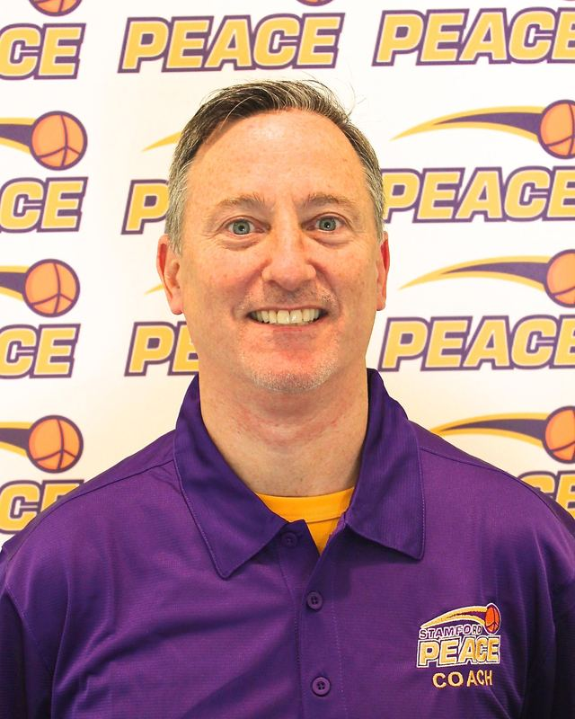
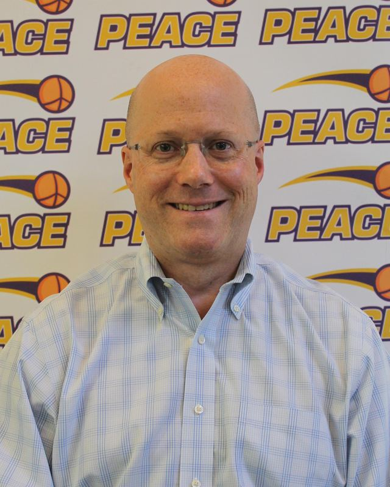
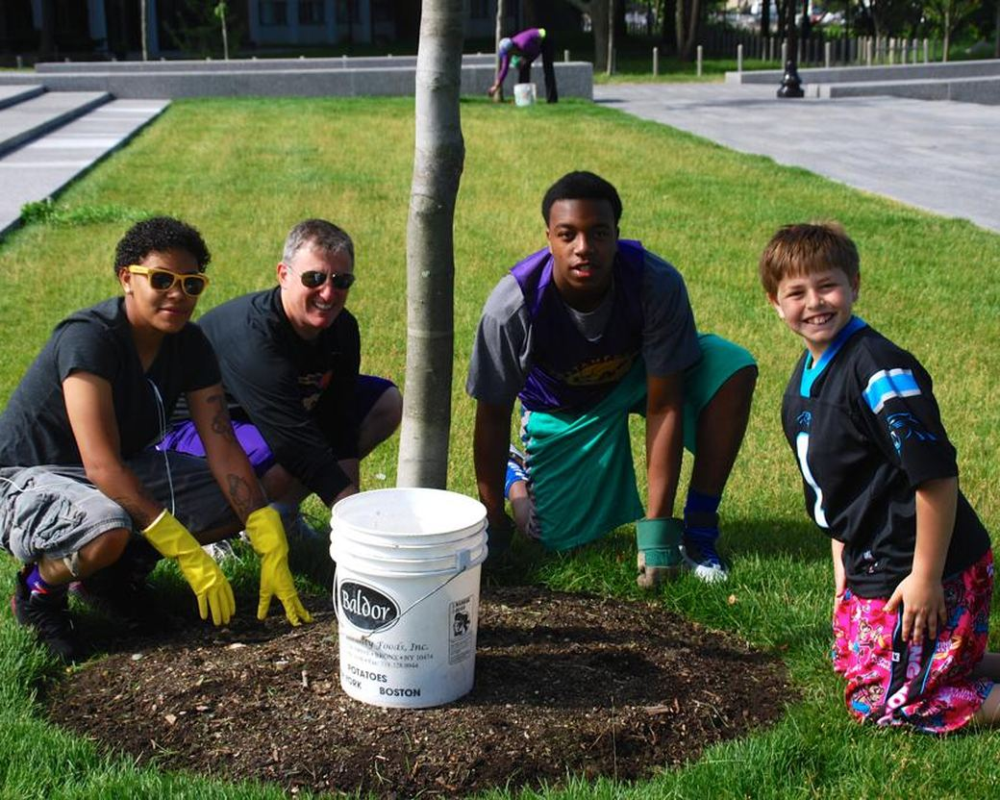

The people behind Beyond Limits.
Beyond Limits Academics is how the Stamford Peace Youth Foundation shows up for students in lower Fairfield County, one relationship at a time.

Stamford Peace Youth Foundation uses high level basketball instruction, training, and competition as well as academic support, to positively influence young people and help them achieve their full potential on and off the court.
A 501(c)(3) not-for-profit founded in 2008, dedicated to the philosophy that “basketball is a privilege”: a reward for consistent effort and achievement in the classroom, in the community and at home.
The Stamford Peace Youth Foundation was founded in 2008 by Brian Kriftcher, and has grown into two programs working side by side: Peace Basketball and Beyond Limits Academics.
1,200+
young people reached across all Foundation programs
Beyond Limits Academics launched in 2014 as one of the Foundation's programs.
Leadership

Brian Kriftcher

Andy Sklover
Brian Kriftcher Founder and President, Stamford Peace Youth Foundation. Known as Coach "K".
Following a successful 18-year Wall Street career, Brian Kriftcher (Coach "K") retired from the business world at the age of 40 to devote his full-time energies to his passions for coaching, teaching and philanthropic work.
Coach "K" is the Founder and President of Stamford Peace Youth Foundation. He is the Head Coach of the boys’ Varsity basketball team at Notre Dame Prep of Sacred Heart University. Prior to Notre Dame Prep, Brian was the Head Coach of the boys’ Varsity basketball team at Trinity Catholic High School. Prior to Trinity Catholic he was the Head Coach of the girls' Varsity basketball team at Westhill High School in Stamford, CT and the Head Coach of the boys’ Varsity basketball team at St. Luke's School, a secular college-preparatory independent school in New Canaan, CT, where he won the coveted Fairchester Athletic Association Tournament Championship in 2010-2011. Before that he was head coach of the boys’ Freshmen basketball team and assistant coach of the boys’ Varsity and Junior Varsity basketball teams at Westhill High School in Stamford, CT.
Coach "K" has been a lifelong student and teacher of the game and has successfully coached both boys and girls teams representing Stamford in the JCC Maccabi Games in Orange County (CA), Westchester County (NY), and Connecticut, as well as many other teams in many other events. Coach "K" has worked at such distinguished basketball camps, and under such well-known coaches, as the Bob Hurley Basketball Camp, Coach K Academy/Duke Basketball Camp, and Point Guard College. He is also a frequent basketball clinician/instructor and 1-on-1 trainer. As a player, Coach K earned a Silver Medal representing the U.S.A. as a member of its Masters (35+ years old) basketball team in the World Maccabiah Games in Israel in 2009. Previously, he earned a Gold Medal in the Pan American Maccabiah Games in Buenos Aires, Argentina in 2007.
Coach "K" earned his Bachelor of Arts degree in Political Science from the State University of New York at Albany, where he was a member of the men’s intercollegiate basketball team for two seasons. He earned a law degree from St. John’s University Law School, which he attended at night; and remains licensed to practice law in New York State.
Coach "K" serves on the Board of Directors of PeacePlayers International, a not-for-profit organization that uses the game of basketball to bridge divides between young people in conflict areas throughout the world, where he served as Global Chairman from July 2012 to December 2018. He also serves on the Board of Directors of PowerFORWARD International, which through basketball develops educational opportunities for young people in Haiti. From 2009 to 2012, he was president of the Stamford JCC.
Andy Sklover Co-founder, Beyond Limits Academic Program
In 2013, Andy Sklover co-founded the Beyond Limits Academic Program as a program of Stamford Peace Basketball Club, Inc.
As a former member of the City of Stamford’s Board of Representatives (BOR), he served as chair of the Education Committee and a member of the Fiscal, State & Commerce and Charter Review Committees. As Education Committee Chair, he lead the establishment of the BOR’s Student Advisory Council (SAC), which seeks to empower the Stamford Public School (SPS) student body by granting student representatives an opportunity to express their thoughts and opinions and favorably impact the current and future academic and social experiences of SPS students. He has also served as a member of a School Governance Council and the High School Call to Action and District Technology Committees.
From December, 2012 to June, 2015, Sklover served, on a part-time basis, as Director of Advocacy and Education for Stamford Achieves, a non-profit established in 2004 to serve as an advocate and catalyst for closing the achievement gap in Stamford.
He earned his Bachelor of Arts degree in Economics from Northwestern University and an MBA from Columbia University. He is the President of Sklover Benefits Group, Inc., an insurance brokerage firm also based in Stamford.
A Growing List of Collaborators
Bartlett Arboretum and Gardens
Horizons at NCCS
Intempo
Kids in Crisis
Mill River Park Collaborative
Sacred Heart University
SCSE
Silvermine Arts Center
Stamford Public Schools
UConn Stamford
Our Board of Directors
Nine people serve on the board of the Stamford Peace Youth Foundation. Brian Kriftcher is one of them, and his biography is above.
Dorothy Brill Chief People Officer, Grayscale Investments
Dorothy Brill is the Chief People Officer at Grayscale Investments, where she builds talent function at the largest digital currency asset manager. Grayscale helps investors access the digital economy through secure, compliant, and future-forward investment products since 2013. Prior to Grayscale, Dorothy served as Head of Human Resources for Strategic Value Partners LLC, a global investment firm with headquarters in Greenwich, CT. She was Head of HR for Silver Point Capital from 2008 to 2013 and has had other HR leadership roles, including 8 years as Head of HR for Synapse Group, Inc. and HR jobs at GE/GE Capital. She began her career in Institutional Sales at Allen & Company, Inc. where she also helped manage their Investment Conference in Sun Valley, Idaho. During her eclectic career, Dorothy also spent 4 years teaching high school history and coaching field hockey and lacrosse at The Harvey School.
Dorothy earned a BA from Williams College and an MBA from Cornell’s Johnson School. She lives in Stamford with her two teenage sons and has been cheering from the sidelines of courts and fields for years. She served in the past on the "Hope in Motion" committee that organizes the charity walk & run event to raise funds for Stamford Hospital’s Bennett Cancer Center.
Gina Frederick Social worker, Apples Early Childhood Development Center
Gina Frederick is a social worker at Apples Early Childhood Development Center, a public pre-school in Stamford that addresses the needs of both typical children and children with special needs. Prior to that, she was a social worker at Northeast Elementary School in Stamford, CT. She provides counseling services and works closely with children, teachers, parents, and the Department of Children and Families. Over the past 8 years, Ms. Frederick has developed and fostered partnerships with various community organizations, such as the Connecticut Food Bank and Person To Person. Through these collaborations, Ms. Frederick has helped secure food and clothing for needy children, as well as helping to provide up to 40 camp scholarships every summer.
Ms. Frederick received her B.A. from the University of Michigan and her M.S.W. from New York University. She previously worked at Child Guidance Centers in both Stamford and New London. She served on the board of directors of the Friends of the Ferguson Library, where she co-chaired the Stamford Literary Competition, and currently serves as an Advisory Board member of the Avon Theatre in Stamford.
Ms. Frederick lives in Stamford, with her husband Steven, and their 3 children.
Rev. Dr. Stephen Chapin Garner Pastor, author, and adjunct faculty at Boston University School of Theology
Rev. Chapin Garner is a native New Yorker, having grown up over the border from New Canaan in Westchester County. His greatest passions are being a husband, father, and pastor.
Chapin is a graduate of Boston University School of Theology and holds a Doctor of Ministry degree in preaching from Gordon-Conwell Theological Seminary. He has served as a pastor at the Village Church in Wellesley, Massachusetts, and the United Church of Christ in Norwell, Massachusetts.
Chapin has been a member of the Board of Trustees of the Alban Institute, he is an adjunct faculty member in homiletics and pastoral studies at Boston University School of Theology, and he is a resident preacher at the Church at Point O’Woods in Fire Island, New York, during the summer. Chapin’s books include: Lost in the Middle? Claiming an Inclusive Faith for Christians Who Are Both Liberal and Evangelical; Found in the Middle! Theology and Ethics for Christians Who Are Both Liberal and Evangelical; Scattering Seeds: Cultivating Church Vitality; and As The Spirit Moves: A Daily Devotional.
Darrell Johnson Executive Director, Stamford Partnership
Darrell Johnson is the Executive Director at Stamford Partnership, where he leads efforts to strengthen Stamford’s economy, foster innovation, and create new opportunities for businesses and residents alike. Before stepping into this role at Stamford Partnership, he was Strategic Advisor at Sedgwick & Cedar Advisors, providing marketing, business development and strategy implementation services to leagues, investors and digital organizations to help unlock growth, relaunch brands, and find new sources of revenue. Before Sedgwick & Cedar Advisors, Darrell was the Senior Director, Global Media Partnerships at WWE where he led and executed key WWE strategic media initiatives with NBCUniversal (USA Network & Peacock) and FOX Sports. From 2016-2019, he was the first Executive Director of the New York City Chapter of the Positive Coaching Alliance (PCA). Darrell worked with a dynamic board and high-impact strategic partners such as the New York Yankees, Madison Square Garden (NY Knicks, NY Rangers & NY Liberty), and NYC FC soccer club to transform the NYC tri-state area into a youth sports development zone.
Prior to joining PCA, Darrell’s career was spent in brand management at Sara Lee, PepsiCo, and Heineken, focused on marketing and media strategy, new product innovation as well as sports and entertainment activation for several world-renowned brands. Darrell has a BA from Wesleyan University (Middletown, CT) and an MBA from Boston College (Chestnut Hill, MA).
A native New Yorker, Darrell currently resides in Stamford, Connecticut, with his wife.
Brian Large Partner, Lenox Advisors Inc.
Brian Large is a Partner at Lenox Advisors Inc., a wealth advisory firm based in New York, with offices in Stamford (CT), Chicago, San Francisco, and Los Angeles.
Kevin O'Reilly Senior finance, Terex Corporation
Kevin O'Reilly has spent the past 20 years in various senior finance positions at Terex Corporation, a global machinery manufacturer servicing the construction, energy, and materials management industries. Prior to Terex, Kevin spent 11 years at PriceWaterhouseCoopers in New York City. Kevin is a graduate of Rochester Institute of Technology.
Kevin and his wife, Betsy, have lived in Stamford, CT for over 20 years. They have three children. Their youngest, Kyle, is currently a videographer with Stamford Peace AAU.
Patrick Powers Managing Director and Co-Founder, Collegiate Quarters Management
Patrick Powers is the Managing Director/Co-Founder of Collegiate Quarters Management (CQM). CQM is an owner, operator and developer of student housing assets. CQM seeks to identify properties that offer the potential for value enhancement through operational efficiencies, renovation and market repositioning. Established in 2016 Patrick has led CQM’s overall investment strategy, deal sourcing, and property operations. Over this time-period CQM has owned and operated nearly 1,000 beds across seven different student housing markets. Asset types under the CQM umbrella have ranged from scattered sites of single-family homes to Class A apartment complexes with a wide range of amenities.
Prior to CQM, Patrick was the Owner/Operator of the HoopHall Dreams Camps. His camps serve more than 750 youth basketball players per year.
Patrick is a graduate of Brown University, where he was a four-year member of the Varsity basketball program. As a player at Brown, Patrick broke the school’s single season record for most three-pointers made. Patrick earned All-Ivy League honors in 2004 and Academic All-Ivy League honors in 2003 and 2004. In addition, in 2004, he was named to the District 1 Academic All-American team by the College Sports Information Directors of America (a CoSIDA Academic All-American).
Michael Tepedino Founder and Chairman, BL Next
Mike Tepedino has been in the real estate industry for more than 28 years, having started his career at Travelers Insurance Company. He is currently the Founder and Chairman of the Board at BL Next, a not-for-profit component of Blue Light Capital, a real estate investment firm. The mission of BL Next is to educate and empower student athletes for successful careers in commercial real estate, enabling them to extend their impact from the athletic fields to the real estate industry. He is also currently the Founder/Managing Partner at Blue Light Capital. Blue Light Capital draws upon deep industry experience to provide a seamless, decisive, people-first real-estate investment process. Blue Light Capital invests in the future of the industry, enabling rewarding career paths for student athletes.
Prior to BL Next and Blue Light Capital, Mike was the Executive Managing Director at JLL, a leading professional services firm specializing in real estate and investment management. JLL shapes the future of real estate for a better world by using the most advanced technology to create rewarding opportunities, amazing spaces and sustainable real estate solutions for people and communities.
Before JLL, he was a member of the Executive Committee of HFF L.P., a leading provider of capital markets transaction services to the U.S. commercial real estate industry. Mike is a graduate of Skidmore College and the Gabelli School of Business at Fordham University.
Mike lives in Rye, New York with his wife, Kerry, and four children, all of whom are avid hoop fans and players.
Who to talk to
Office hours are Monday to Thursday, 9am to 3pm. Closed Friday, Saturday and Sunday.
Our commitment

We are cognizant of the fact that our society’s full promise has eluded too many for far too long. The issue of racial division and other inequities in America requires active, open, honest, direct, and respectful encounters to overcome them. As we face a crossroads, do we truly come together or do we remain apart? Stamford Peace remains wholly committed to doing all we can to champion justice and to play a leadership role in supporting our community’s most underserved; to combat all forms of racism and bigotry; and to be a vocal ally in the ongoing struggle for a more fair, loving and inclusive world.
Stamford Peace does not discriminate on the basis of race, color, national origin (ancestry), religion, gender identity (including gender expression), sexual orientation, disability, age, marital status, family/parental status, military status or any other characteristic protected by law in any of its activities, programs or operations, including employment.
Whatever brought you here, we can help you take the next step.
Find tutoring for your student, or support the work with a gift to Beyond Limits.